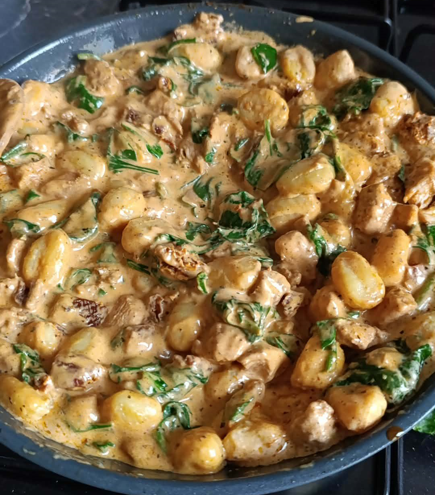
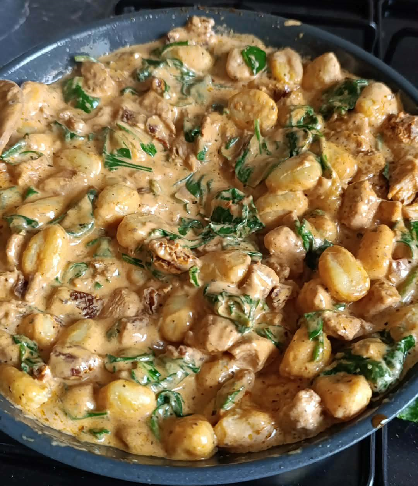

Gnocchi wersja Kacper


Potrzebujemy
- Pierś z kurczaka - jedna duża(więcej nie zaszkodzi)
- Pół słoika pomidorów suszonych
- Szpinak - Torebka ok. 500g
- Opakowanie gnocchi(może kiedyś zrobimy sami)
- Śmietanke 30% - 300ml
- Opcjonalnie połówka cebuli
- Przyprawy: sól, pieprz, przyprawa gyros, papryka słodka, oregano, bazylia
- Zaczynamy od pokrojenia kurczaka na kawałki tzw. na gryza
- Kurczaka obtoczonego w przyprawie gyros, soli, pieprzu oraz papryce slodkiej podsmażamy
- Regularnie obracamy kurczaka aby sie nie przypalil, na tym etapie wystarczy około 10 minut jeśli kawałki nie są duże
- Zdejmujemy kurczaka z patelni
- Kroimy pomidory w małe kawałki
- Rozgrzewamy patelnie wraz z olejem z pomidorów
- Jeśli mamy cebule najpierw drobno pokrojoną podsmażamy chwile na niedużym ogniu
- Po kilku minutach (3-5) wrzucamy pomidory i chwilke podsmażamy
- Po krótkiej chwili wlewamy nasza śmietanke
- Po jej zagotowaniu wrzucamy nasze gnocchi i przykrywamy pokrywką
- Gdy sos delikatnie zgęstnieje (3-5 minut) odkrywamy, dorzucamy naszego kurczaka
- Stopniowo dodajemy również szpinak aby ten "rozpuścił się" w sosie oraz dodajemy oregano i bazylie
- Gdy patelnia wygląda tak jak na zdjęciu można nakładać i jeść
- Smacznego!
Powrót na początek